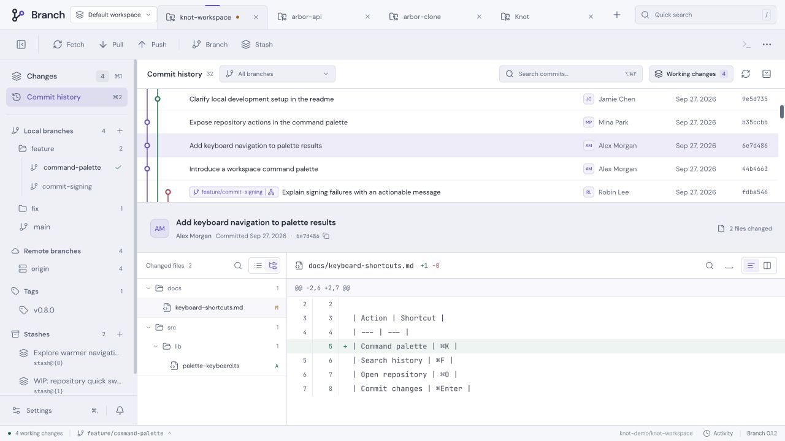

01
흩어진 저장소를 한곳에.
워크스페이스와 그룹으로 프로젝트를 정리하고, 탭이나 사이드바에서 저장소를 전환하세요.
GIT, TIED TOGETHER.
당신의 프로젝트가 모이는
데스크톱 Git 클라이언트.
YOUR WORKSPACE.
저장소를 정리하고, 변경을 비교하고,
커밋까지 자연스럽게 이어가세요.
macOS · Windows · 공개 베타

하나로 이어지는 작업 흐름
열어야 할 저장소부터 확인해야 할 변경까지.
매일 하는 Git 작업을 한곳에서 이어가세요.
워크스페이스와 그룹으로 프로젝트를 정리하고, 탭이나 사이드바에서 저장소를 전환하세요.
파일의 Diff를 비교하고 필요한 변경을 스테이징하세요. 내용을 확인하며 커밋을 준비할 수 있어요.
브랜치와 커밋을 그래프로 살펴보고, 검색과 파일별 히스토리로 변경의 흐름을 확인하세요.
익숙한 Git, 더 편한 작업 공간
앱에 포함된 Git과 기존 설정을 함께 사용해요.
필요하면 내 컴퓨터에 설치된 Git도 선택할 수 있어요.
Fetch, Pull, Push로 원격 저장소와 작업을 이어가세요.
명령 팔레트와 검색, 원하는 키 설정으로 도구를 빠르게 사용하세요.
한국어·영어, 라이트·다크 테마와 포인트 색상을 선택할 수 있어요.
처음 시작하는 Branch
작업하던 저장소를 그대로 열고,
Branch에서 다음 변경을 확인하세요.
Mac에서는 내려받은 DMG를 열고 Branch를 응용 프로그램 폴더로 옮기세요. Windows에서는 내려받은 설치 파일을 실행하세요.
내 컴퓨터의 Git 저장소를 열어 작업 공간에 모아보세요.
파일의 Diff와 커밋 그래프에서 작업의 흐름을 확인하세요.
Branch는 내 컴퓨터의 저장소를 다루는 데스크톱 Git 클라이언트예요. 웹 버전은 없고, 이 페이지에서 Mac용과 Windows용 앱을 내려받을 수 있어요.
Mac은 Apple silicon 모델에서 macOS 11 이상과 WebKit 16.2 이상이 필요해요.
Windows는 Windows 10·11(64비트, x64)에서 사용할 수 있어요. 화면 표시에 쓰는 Microsoft Edge WebView2 런타임이 없으면 설치 프로그램이 함께 설치해요.
Intel Mac과 Linux는 아직 지원하지 않아요.
macOS 12 이상에서는 앱에 포함된 Git과 Git LFS를 사용할 수 있어요. macOS 11에서는 시스템 Git 2.38 이상이 필요해요.
Windows에서는 따로 설치하지 않아도 돼요. 앱에 Git for Windows의 MinGit과 Git LFS, Git Credential Manager가 들어 있어요.
필요하면 설정에서 내 컴퓨터에 설치된 Git을 선택할 수 있어요. 기존 커밋 훅과 서명 설정도 그대로 쓸 수 있어요.
기존 Git·SSH 설정을 그대로 사용해요. Mac에서는 키체인에 저장된 로그인을 쓰고 앱 내 로그인은 제공하지 않으므로, 원격 작업 전에 인증을 준비해 주세요.
Windows에서는 앱에 포함된 Git Credential Manager가 HTTPS 로그인이 필요할 때 로그인 창이나 브라우저를 열고, 로그인 정보를 Windows 자격 증명 관리자에 저장해요.
새 컴퓨터로 옮긴 뒤에도 인증은 별도로 설정해야 해요.
Mac에서는 내려받은 DMG를 열고 Branch를 응용 프로그램 폴더로 옮기세요. macOS가 앱을 확인할 수 없다거나 손상되었다고 알리면 열지 말고, 파일을 지운 뒤 알려 주세요.
Windows에서는 내려받은 설치 파일(Branch_버전_x64-setup.exe)을 실행하세요. 관리자 권한 없이 내 계정에 설치돼요. 설치 파일에 아직 코드 서명이 없어 "Windows의 PC 보호" 창이 뜰 수 있어요. 이 페이지나 GitHub의 paldyn/Branch-releases에서 받은 파일이라면 추가 정보 → 실행을 눌러 설치하세요. 다운로드로 이동
앱이 새 버전을 확인하고 내려받으며, 설정 → 업데이트에서 바꿀 수 있어요. 설치는 직접 확인한 뒤에만 진행돼요.
베타 기간에는 무료로 쓸 수 있어요. 유료 플랜을 도입하거나 무료로 제공하는 범위를 바꾸게 되면 적용일 30일 전까지 이 페이지와 업데이트 릴리즈 노트로 알려 드려요. 이용약관 제4조 보기